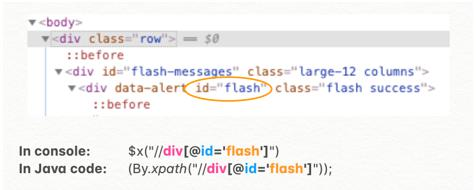
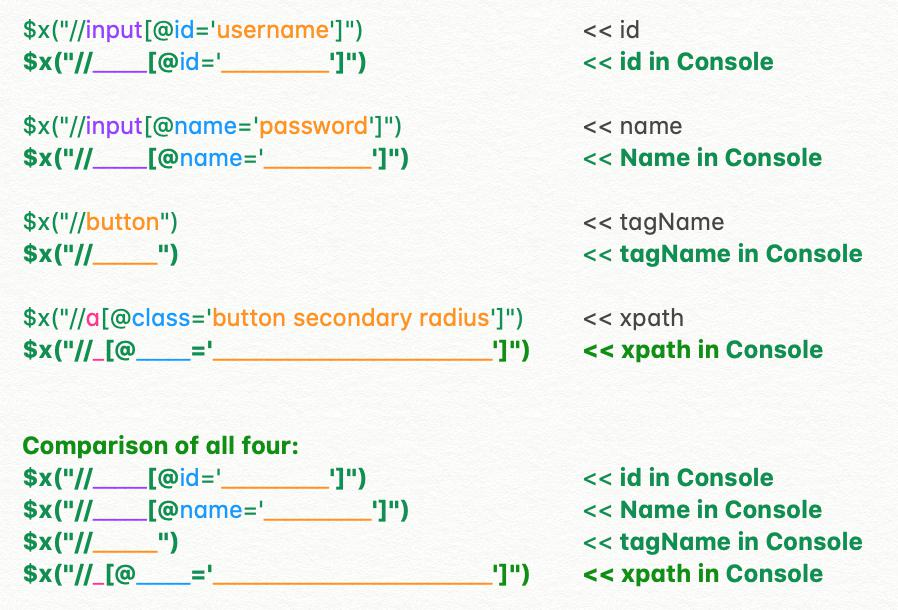

XPath and CSS Locators for Test Automation
When writing automated tests in Selenium or standalone scripts, it's important to be able to define locators in different ways. The most common ones to use are id, name, tagName, and xpath.

To determine the selector to use for your locator:
1) Right-click on the web page and choose Inspect.
2) Hover over the element to see which html code is highlighted.
3) Use the examples below to see if "id" is an option. If not, look for an alternative.
4) Try it out in the console (changing the format slightly as shown below).
5) If successful in the console, use the format that's appropriate for the programming language used in your tests.
Here's how to test your locator by entering a slight variation of it in your Chrome console.
